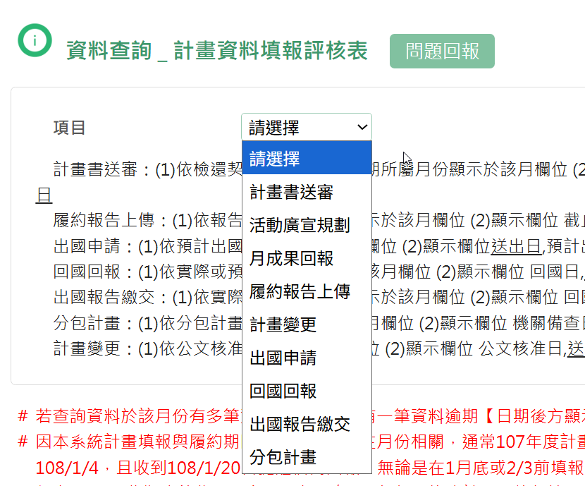

本章節詳細說明計畫執行期間須操作的各項管理系統， 包含 GRB、EAPMIS、GSTP、院內契約系統， 以及公文報備作業的完整流程與注意事項。
GRB（Government Research Bulletin）為國科會主管的政府科技計畫資料庫，所有政府科技計畫皆須於此系統進行登錄與報告提交，以彙整全國科技計畫之研究成果與執行狀況。
| 作業項目 | 提報時間 | 注意事項 |
|---|---|---|
| 計畫起始登錄 | 簽約後 12 個工作日內 | 須填寫計畫基本資料、主持人資訊、經費配置；需與契約書內容一致（§8(十九)） |
| 期中摘要填報 | 115 年 7 月 15 日 | 期中GRB |
| 期末摘要（初稿） | 期末作業 | 期末報告GRB |
| 期末報告繳交（國圖版） | 機關通知期限內 | 1 式 2 份＋電子檔；為驗收合格要件（§7(一)2(3)）。國圖版需要「計畫經費與人力明細」等與金額與人名相關等資訊需移除。 |
| 結案登錄 | 驗收通過後儘速 | 確認所有欄位填寫完成、報告上傳完畢；結案後資料將公開於 GRB 資料庫 |
EAPMIS 為能源署自建系統，用於追蹤計畫執行進度，是所有能源署委託計畫最頻繁使用的管考平台。計畫執行期間須定期提報月報、季報及各階段報告。
| 作業項目 | 提報時間 | 注意事項 |
|---|---|---|
| 計畫起始 | 機關檢還鈐印契約公文發文日次日起 15 個工作日內 | 登錄計畫基本資料、工作項目、查核點與里程碑設定（§8(二十)） |
| 月成果回報 最頻繁 | 次月 3 日前 | 填報前月執行進度、工作成果摘要、活動廣宣、成果統計、會議講習 |
| 當月活動廣宣規劃 | 每月 3 日前 | 填報當月及次月活動廣宣規劃 |
| 會議講習季規劃 | 2/15、5/15、8/15、11/15 | 每季提報會議講習規劃 |
| 查核點完成情形 | 查核點預計完成日 | 依契約查核點時程回報完成情形 |
| 第 1 期工作季報表 | 115 年 4 月 20 日 | 1 式 3 份；第 1 期付款條件之一（§7(一)2） |
| 第 2 期工作季報表 | 115 年 7 月 20 日 | 1 式 3 份（§7(一)2） |
| 期中報告 | 115 年 7 月 15 日 | 1 式 10 份（含電子檔）；第 3 期付款條件之一（§7(一)2） |
| 上半年計畫執行績效 | 8 月 11 日 | 上半年執行績效回報 |
| 第 3 期工作季報表 | 115 年 10 月 20 日 | 1 式 3 份（§7(一)2） |
| 期末報告（初稿） | 115 年 12 月 25 日 | 1 式 10 份（§7(一)1） |
| 全年度預估經費動支表 | 115 年 12 月 28 日 | 函送 1 式 3 份並上傳 EAPMIS（§3(一)） |
| 年度計畫執行績效 | 次年 1 月 20 日 | 年度執行績效回報 |
| 期末報告（定稿） | 機關通知期限內 | 1 式 12 份＋電子檔上傳 EAPMIS ；驗收合格要件（§7(一)2(3)） |
| 結案 | 日常完成並驗收通過後儘速 | 確認所有計畫資料填報皆已準時提交（確認無罰款），系統狀態更新為結案
 |
GSTP（Government Science and Technology Program）為國科會建置之科技計畫管理系統，主要用於每季細部計畫之提報，追蹤政府科技計畫之季度執行狀況。
工研院內部建置之契約履約管理系統，用於追蹤計畫從啟動到結案的完整生命週期，涵蓋執行規劃、查核點產出交付、品質審查及結案作業。
依據契約規定，計畫執行期間特定事項須以正式公文向能源署報備。以下為常見的報備類型與相關規範：
| 報備類型 | 時機 | 所需文件 | 注意事項 |
|---|---|---|---|
| 出國報備 | 出國前 30 日 | 出國計畫書、行程表、經費概算表（於 EAPMIS 填報並下載申請表） | 走紙本發文（方便抽換），須經計畫主持人及單位主管核准後發文；回國後 10 日內系統回報實際出國資訊；返國後 60 日內繳交出國報告 3 份（§7(一)2(5)） |
| 分包報備 | 分包簽約後 30 日內 | 分包契約書、計畫書、非拒絕往來廠商證明 | 分包計畫依據組內計有流程辦理。送達機關備查（§8(七)8）；機關備查後 15 個工作日內完成 EAPMIS 分包登錄，逾期依 §12 計算違約金 |
| 人員異動報備 | 異動日起 30 日內 | 異動名冊、保密同意書 | 函請機關核可（§8(五)）；不得於期程結束前 10 日內或結束後函請 |
| 變更報備 | 變更事項發生前 | 變更申請書、變更對照表、影響評估說明 | 機關核可後 15 個工作日內完成系統登錄（§8(二十一)）；接獲通知後 10 日內提出文件（§14(一)）；不得於期程結束前 10 日內函請（§14(五)） |
| 其他報備事項 | 依契約規定 | 依個案所需文件 | 如計畫展延、期中/期末審查時程異動等，皆須以公文報備 |
依據能源署指示辦理，須通知各計畫每季上傳能專知識物件至能源知識庫。
| 項目 | 說明 |
|---|---|
| 帳號 | 計畫主持人信箱 @ 前的帳號（有大小寫區分）。例：信箱為 cMi@itri.org.tw，帳號即為 cMi |
| 預設密碼 | Energy@@2026（密碼已設定，登入後請立即修改密碼） |
| 類型 | 內容說明 | 上傳頻率 |
|---|---|---|
| 建言類 | 策略、政策、措施、法規等相關建言 | 至少每半年一次 |
| 評析／標竿數據類 | 先進技術或方法、策略、政策、措施、法規之評析，或國內外技術標竿統計數據 | 每季上傳 |